Captures du vrai moteur (python tools/rl_polissage_shots.py). Journal : tools/playtest/rl_polissage.md.
avantChoix par mot-cle : venin, poudre toxique, patient zero et dernier souffle partageaient la même goutte ; Spécial, Saisie, Courir et les synergies la même étoile.
après81 dessins propres, aucune paire proche (test de rasterisation). Planche contact du menu en run (24 icônes par page) :
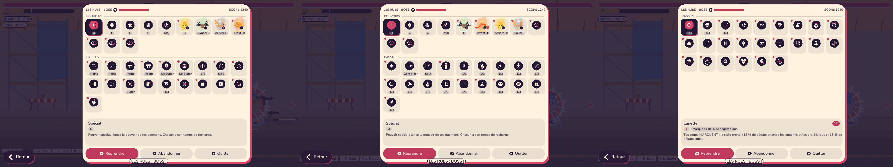
avantInvisible. Première pose (sous le HUD) : elle recouvrait l'etiquette du 2e joueur en paysage.
aprèsPastille sous la pile de gauche ; 1 a 5 joueurs, rien a 6 ou plus.
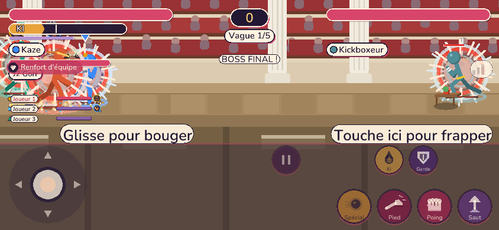
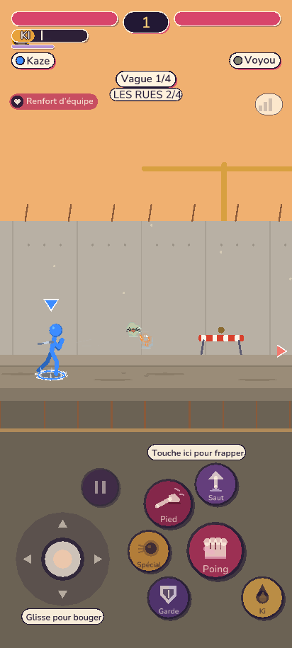
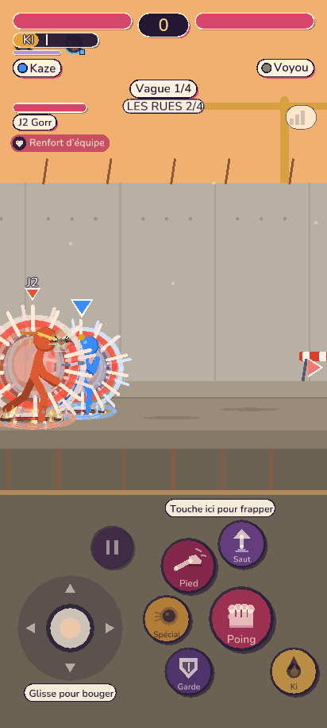
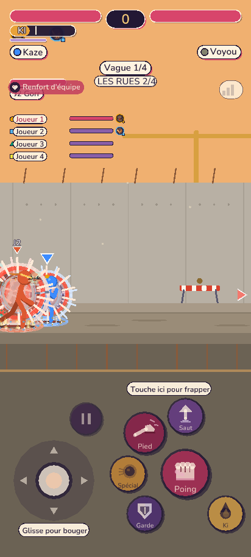
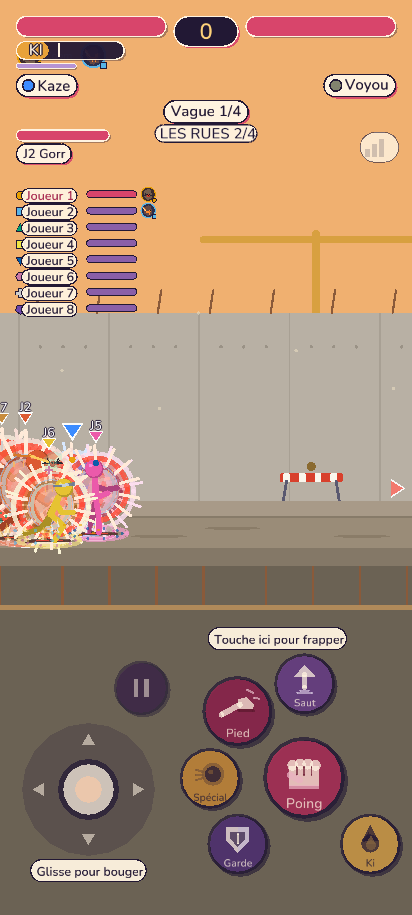
avantUne annonce (« Vague 1 », « MINI-BOSS ! ») se dessinait par-dessus le titre de la feuille et la description.
aprèsLes feuilles modales masquent les annonces ; le récapitulatif dit « 2/3 » et non « x2 ».
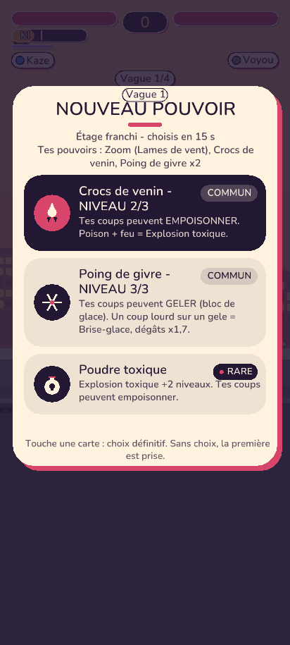
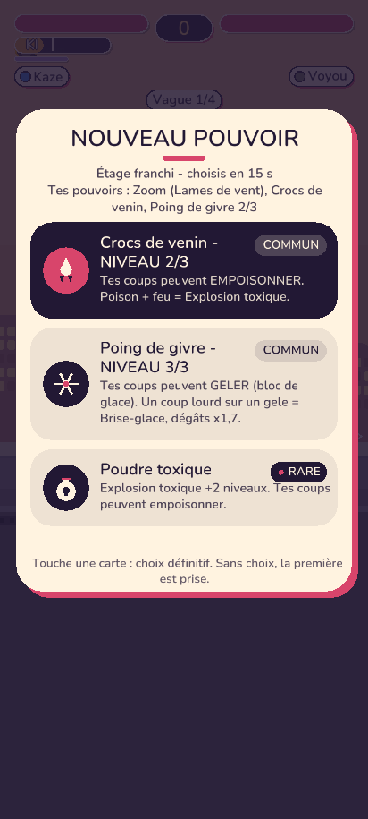
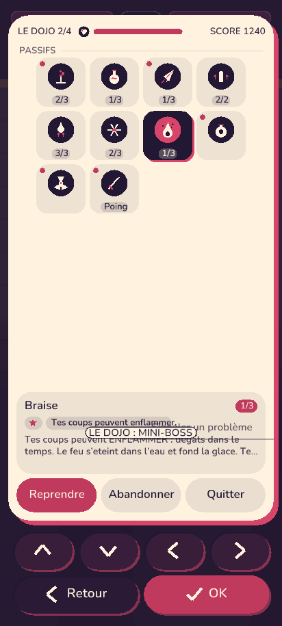
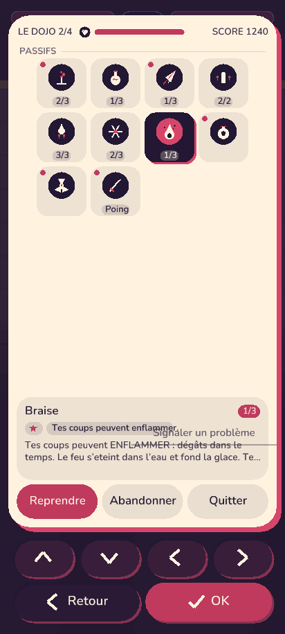
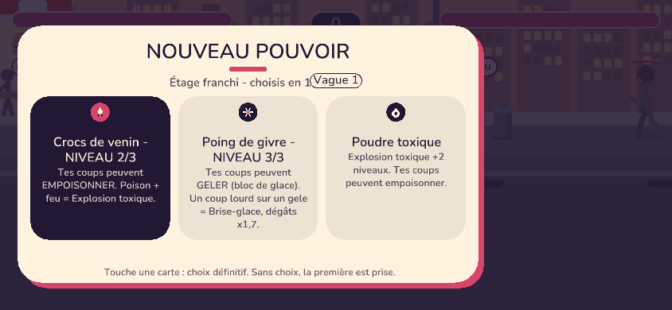
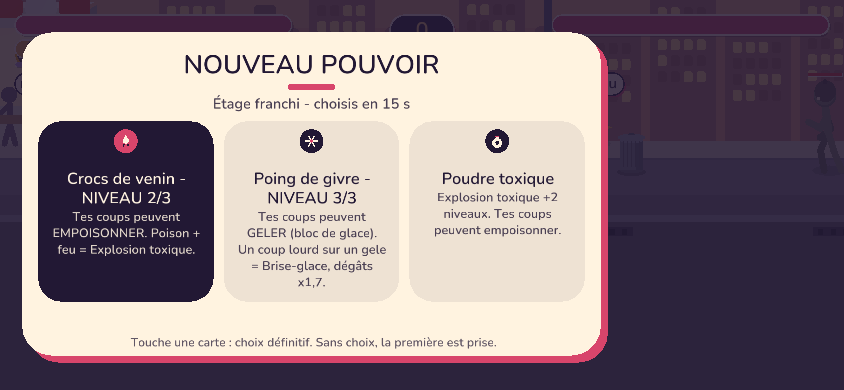
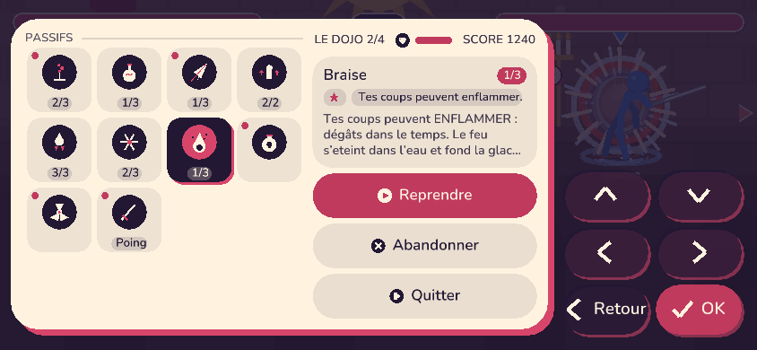
Solo et coop annoncent l'étage par le même appel (rl_menu::announce_floor) : « BOSS FINAL ! » en priorité Attention.
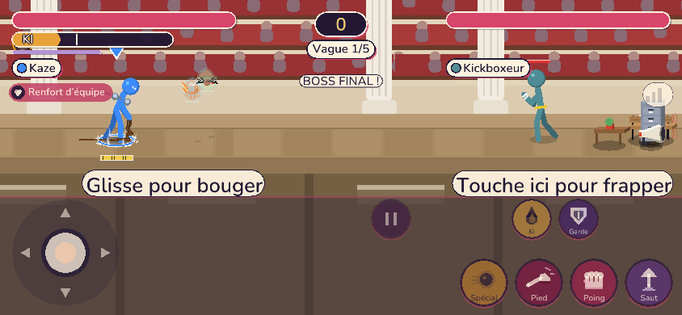